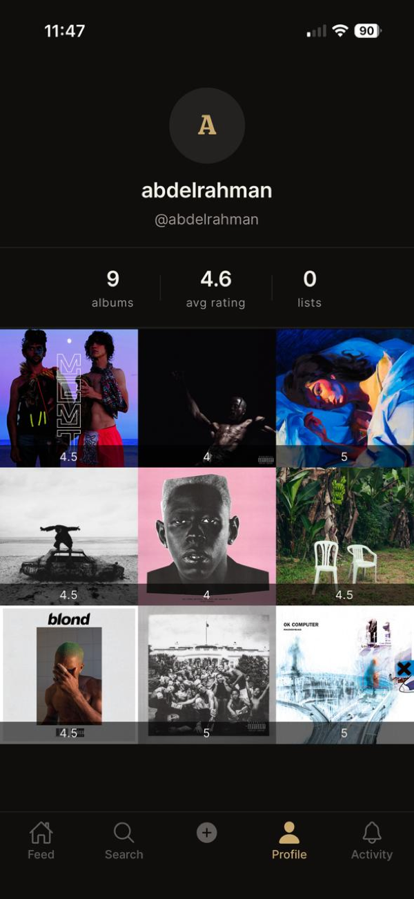

No milestones match these filters.
21 days. 5 phases. 1 PM. No engineers.
Spun is a music diary — your private record of every album you listen to, what you rated it, and what you thought. The social layer is optional, on top. Built solo with Claude Code, in public. This page is the live timeline of what's shipped.

Hover any block to see its role and the patterns that live there.